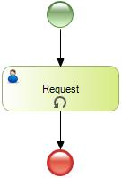
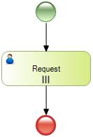

| Defines a loop condition on the number of instances to be created.
| Multi-Instance | Specifies the number of times the task will be executed. The condition is evaluated once and returns the number of instances that must be created. Two properties are added to set. | | None | Default value. | | Standard | A standard loop activity has an associated Boolean expression that is evaluated after each loop cycle. Three properties are added to set. |
Below are described the possible values of this property in detail.
1) Standard
If you select the Standard value, the following three properties are added to the window properties:
1.1) Test Time
Values:
- Before: The condition is evaluated before executing the task.
- After: The condition is evaluated after executing the task.
1.2) Condition Type
Values:
- Rule: Allows you to specify a rule to evaluate the condition. It accepts characters, attributes and relevant data (eg."Customer registration number"+CustomerId+&relevantData).
- Procedure: Allows you to specify a Procedure object to evaluate the condition. This procedure must have the following parm rule:
parm(in:&WorkflowProcessDefinition,in:&WorkflowProcessInstance,in:&WorkflowWorkitem,&numberofiterations);
where the variable &numberofiterations must be Numeric (10)
1.3) Maximum Iterations
It allows you to define a maximum of loops. This property ignores the condition.

2) Multi-Instance
It allows you to specify the number of times the task will be executed. The condition is evaluated once and returns the number of instances that must be created.
If you select this value, the following two properties are added to the window properties:
2.1) Expression Type
Values:
- Rule: Allows you to specify a rule to evaluate the condition. It accepts characters, attributes and relevant data (eg."Customer registration number"+CustomerId+&relevantData).
- Procedure: Allows you to specify a procedure to evaluate the condition. This procedure must have the following parm rule:
parm(in:&WorkflowProcessDefinition,in:&WorkflowProcessInstance,in:&WorkflowWorkitem,&numberofinstances);
where the variable &numberofinstances must be Numeric (10).
2.2) Ordering
Values:
- Sequential: The instances are executed one at a time.
- Parallel: The instances are all executed at the same time.
None
For each ending instance, a parallel path will be followed.
One
When the first instance is finished, the flow will continue. The other instances will continue running, but when ended they will not create a new path.
All
The flow will only continue when all instances have completed (synchronization).
This is the default.
Complex
Enables to define an expression that will be executed when ending each instance to check if it should continue or not.

Objects: Business Process Diagram
Controls: Task
Attribute definition
Relevant Data
|